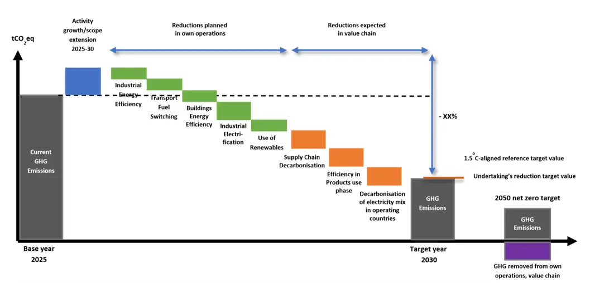
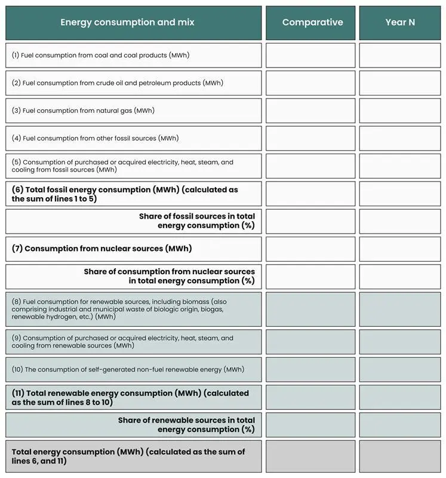

One of the standout components of ESRS topical standards is the E1 climate change, which has emerged as the directive's most stringent and comprehensive standard. By providing a comprehensive framework for disclosing climate impacts, risks, and strategies, it aims to drive meaningful action toward a low-carbon economy. ESRS E1 climate disclosure standards are critical for companies seeking to demonstrate transparency in their climate-related impacts and strategies. Organizations proactively engaging with ESRS E1 requirements can ensure compliance and leverage this standard to enhance their sustainability practices and strengthen their market position in an increasingly climate-conscious business environment. The CSRD climate demands require companies to implement rigorous disclosures, mainly through ESRS E1, to support climate accountability. ESRS E1 is highly relevant across industries, meaning most companies must prepare for compliance. Early preparation is critical for streamlined compliance.
Objectives of E1 - Climate Change Reporting
- Impact Assessment: Evaluate the organization's effects on climate change.
- Mitigation Alignment: Ensure mitigation efforts align with the Paris Agreement.
- Adaptation Planning: Outline plans and capabilities for a sustainable transition.
- Impact Management: Address negative impacts, risks, and opportunities.
- Risk and Opportunity Management: Identify and manage material climate-related risks and opportunities.
- Financial Impact Analysis: Assess the economic effects of climate-related risks and opportunities across short, medium, and long-term timeframes.
ESRS 2 disclosures on E1 climate change
ESRS 2 is a cross-cutting standard with mandatory disclosures that all companies under the ESRS scope must report on, regardless of materiality. Each topical standard includes relevant ESRS 2 disclosures, and for ESRS E1 on Climate Change, specific ESRS 2 disclosures align to give a complete view of a company's climate approach.
Also Read: A Deep Dive into Microsoft Sustainability Manager's Key Features
Here are the critical ESRS 2 disclosures for E1 Climate Change,
-
SBM-3 : Material impacts, risks, and opportunities and their interaction with strategy and business model
Companies must classify each identified climate-related risk as either a physical risk or a transition risk from regulatory changes or technological transitions in a low-carbon economy. Additionally, companies must disclose how resilient their strategy and business model are in the face of climate risks, detailing the scope, methodology, and results of resilience analyses conducted, especially under various climate scenarios that limit warming to 1.5°C.
-
IRO-1 : Description of the processes to identify and assess material climate-related impacts, risks, and opportunities
Companies must explain their processes for identifying and assessing these climate-related impacts, risks, and opportunities across their value chain. This includes evaluating GHG emissions and other direct climate impacts, assessing exposure to physical climate risks such as extreme weather events or sea-level rise, and identifying potential transition risks and opportunities. The assessment must incorporate climate scenario analysis over short-, medium-, and long-term timeframes, applying recognized frameworks like those from the IPCC or International Energy Agency (Refer to AR14 on E1 climate change). It also needs to briefly explain how the climate scenarios are compatible with the critical climate-related assumptions made in the financial statements.
-
E1-1 : Transition plan for climate change mitigation
This disclosure requirement ensures that companies demonstrate transparent reporting on their climate change mitigation strategies, particularly with respect to aligning with the Paris Agreement's goal of limiting global warming to 1.5°C and achieving climate neutrality by 2050. Companies must explain how their GHG emission targets align with the Paris Agreement to limit warming to 1.5°C. This includes a detailed explanation of how companies plan to achieve decarbonization through actions like adapting their product/service portfolios, adopting new technologies, and modifying their operations across the value chain (upstream and downstream). ESRS E1 emphasizes the need for companies to set ambitious GHG emissions targets that align with global climate goals.
Companies must quantify investments and funds dedicated to their transition plans, referring to taxonomy-aligned CapEx and CapEx plans outlined in EU regulations and associated key performance indicators. Effective climate transition plans under ESRS E1 provide a roadmap for companies to shift toward sustainable, low-carbon business practices. Companies involved in coal, oil, or gas-related activities should disclose any significant capital expenditure in these areas during the reporting period. These requirements collectively aim to enable stakeholders to evaluate how well a company's strategies and business models are equipped to contribute to and thrive in a sustainable, low-carbon economy.
-
E1-2 : Policies related to climate change mitigation and adaptation:
E1-2 requires undertakings to disclose the policies they have implemented to tackle climate change, both in terms of mitigation, reducing greenhouse gas emissions, and adaptation, preparing for the impacts of climate change. This disclosure should differentiate between mitigation and adaptation policies, outlining their objectives, responsible personnel, and necessary resources. The policy statements should reflect how the undertaking plans to manage GHG emissions and physical climate risks, including relevant operational policies that facilitate adaptation.
The reporting company must give explanations on whether and how its policies address the following areas:
- Climate change mitigation.
- Adaptation of climate change.
- Energy efficiency.
- Renewable energy deployment.
- Other
-
E1-3 : Actions and resources about climate change policies
This Disclosure Requirement aims to provide an understanding of the critical actions taken and planned to achieve climate-related policy objectives and targets. This includes outlining significant operational and capital expenditures associated with climate initiatives. The disclosure should highlight measurable targets related to climate action and clarify how resource availability impacts the undertaking's ability to achieve these targets. Consistency with key performance indicators and financial statements is essential to ensure transparency and credibility.
- Describe key actions and measurable targets for climate initiatives.
- Detailed operational and capital expenditures required for implementation.
- Explain the impact of resource availability on climate actions.
In line with the requirements of ESRS 2 MDR-A, the company shall explain if and to what extent its ability to implement the actions depends on the availability and allocation of resources. Ongoing access to finance at an affordable cost of capital can be critical for implementing the undertaking's actions, which include its adjustments to supply/demand changes or its related acquisitions and significant research and development investments.
Also Read: CSRD Value Chain Requirements in Sustainability Reporting
-
E1-4 : Targets related to climate change mitigation and adaptation
E1-4 focuses on the need for undertakings to disclose their targets concerning GHG emissions reductions and climate change adaptation efforts. This includes providing explicit definitions of targets in absolute terms and intensity values while specifying the share of cuts related to each Scope (1, 2, and 3). The disclosure should detail the target base year, and the methodology used in determining these targets, ensuring alignment with sector-specific or cross-sector pathways consistent with limiting global warming to 1.5°C.
The company may present its GHG emission reduction targets alongside its climate change mitigation actions (refer to paragraph AR 19) in a table that illustrates progress over time. Below, an example figure given in ESRS E1 shows targets with specific targets for decarbonization levers to visually represent the pathway and key developments. Precise GHG emissions targets support transparency and accountability, driving a company's progress toward a low-carbon economy.

Figure 1 Example Pathway Illustrating GHG Emission Reduction Targets and Decarbonization Actions Over Time
The company must explain the following:
- The company should detail its climate change mitigation actions, specifying the decarbonization levers it will use and their estimated contributions to achieving its GHG emission reduction targets, broken down by Scope 1, Scope 2, and Scope 3 emissions.
- The company needs to indicate whether it plans to adopt new technologies to meet its GHG emission reduction targets and describe the role these technologies will play in its decarbonization strategy.
- The company must outline whether it has considered various climate scenarios, including at least one that would limit global warming to 1.5°C. This should cover how different environmental, societal, technological, market, and policy developments have influenced the identification of its decarbonization levers.
-
E1-5 - Energy consumption and mix
E1-5 requires undertakings to disclose detailed information regarding their energy consumption and the energy mix used in their operations. This includes specifying energy consumed from processes owned or controlled by the undertaking and ensuring that all quantitative energy-related information is presented in appropriate units (MWh). Energy consumption and mix information may be presented using the following Figure 2-Energy consumption and mix tabular format for high climate impact sectors and for all other sectors by omitting rows 1 to 5. In addition, where applicable, the company shall disaggregate and disclose separately its non-renewable and renewable energy production in MWh.

Figure 2: Energy consumption and mix
-
E1-6 Gross Scopes 1, 2, 3 and Total GHG emissions
Businesses must disclose their gross Scope 1, 2, and 3 GHG emissions, as well as their total GHG emissions. Additionally, businesses should provide information on emissions intensity based on net revenue. Companies are required to disclose a list of Scope 3 GHG emissions categories that are included in their inventory. Additionally, they must justify any categories that are excluded from this inventory.
Companies should separately disclose biogenic emissions of CO2 from biomass combustion or biodegradation that occurs in their upstream and downstream value chain. This includes other GHG emissions (such as CH4 and N2O) that occur during the biomass lifecycle, except those from combustion or biodegradation. The calculation of Scope 3 GHG emissions must not include any removals, purchased, sold, or transferred carbon credits or GHG allowances. When preparing the information for reporting GHG emissions as required is to have
- For calculating GHG emissions, companies can consider the principles, requirements, and guidance provided by the GHG Protocol Corporate Standard or the company if it already applies to the ISO GHG accounting methodology.
- The reporting should distinguish between emissions derived from the location-based and market-based methods applied while measuring underlying Scope 2 emissions.
- Companies should disaggregate their total GHG emissions by Scopes 1, 2, and significant Scope 3 categories.
- The disaggregation could be by country, operating segments, or other relevant criteria.
- Companies need to disclose the methodologies, significant assumptions, and emissions factors used to calculate or measure GHG emissions, accompanied by the reasons why they were chosen, and provide a reference or link to any calculation tools used.
-
E1-7 GHG removals and GHG mitigation projects financed through carbon credits
The objective of this disclosure requirement is twofold: Businesses must disclose GHG removals and storage from their operations and value chains in metric tonnes of CO2eq, detailing removal activities and calculation methods. They should also report on the number of carbon credits purchased outside their value chain and canceled in metric tonnes of CO2eq during the reporting period.
More specifically, companies should report on the following data:
- The reporting company must disclose the total amount of GHG removals and storage in metric tons of CO2 equivalent (CO2eq) from projects it has developed in its operations or contributed to within its upstream and downstream value chains.
- The disclosure should break down the total GHG removals into those directly related to the entity's operations and those occurring in its value chain, categorized by the specific removal activity involved.
- Entities must disclose the total amount of GHG emission reductions or removals, in metric tonnes of CO2eq, achieved through financing climate change mitigation projects outside their value chain via carbon credits. This disclosure should differentiate between carbon credits already verified and canceled in the reporting period and those planned to be canceled, whether based on existing contracts or not.
-
E1-8 Internal carbon pricing
Businesses must disclose their internal carbon pricing schemes and how these support decision-making and climate goals. This includes specifying the Type and Scope of the pricing scheme, applied carbon prices, and the calculation methodology behind setting these prices. They should also report on the approximate gross GHG emissions volumes for each Scope covered by these schemes.
The required information includes the Type of internal carbon pricing scheme. This could include shadow prices applied for capital expenditures (CapEx) or research and development (R&D) investment decision-making and internal carbon fees, as well as the Scope of application-specific activities, geographies, entities, etc., where the carbon pricing schemes are applied.
Also Read: Understanding ESG Assurance: Ensuring Data Confidence for Compliance & Sustainability Reporting
Details about the carbon prices used according to the Type of scheme, along with the critical assumptions made to determine these prices. This includes the source of the applied carbon prices and the rationale behind their relevance for the chosen application. The calculation methodology of the carbon prices may be disclosed, including the extent to which they are based on scientific guidance and how their future development aligns with science-based carbon pricing trajectories.
The approximate gross GHG emission volumes covered by these schemes for the current year, disaggregated by Scopes 1, 2, and, where applicable, Scope 3, expressed in metric tons of CO2eq. The share of these emissions relative to the undertaking's overall GHG emissions for each respective Scope. Additionally, the undertaking must explain whether and how the carbon prices used in these internal pricing schemes are consistent with those used in financial statements, especially concerning asset valuation and impairment assessments.
-
E1-9 Potential financial effects from material physical and transition risks and potential climate-related opportunities
Businesses must disclose the potential financial impacts of material physical and transition risks. They should detail how these risks could affect cash flows, performance, and access to finance over the short, medium, and long term. They must also report on how they financially benefit from climate-related opportunities, from cost savings to market size or revenue growth.
Anticipated financial effects from material physical risk Companies must disclose the monetary amount and proportion of assets at material physical risk over short-, medium-, and long-term periods before and after taking adaptation measures. This includes a breakdown of risks into acute and chronic physical risks. The location of significant assets and the monetary amount of net revenue from activities at risk are also required.
Anticipated financial effects from material transition risks Disclosure should include the monetary amount and proportion of assets at risk due to transition factors before mitigation actions. Companies must also report the proportion of these assets that are addressed by climate change mitigation efforts. Climate-related opportunities Disclosures should explain how companies might financially benefit from climate-related opportunities.
To effectively respond to ESRS E1 requirements, companies should:
- Conduct thorough climate risk assessments, develop robust transition plans, and accurately account for GHG emissions across all scopes.
- Companies should start by assessing their current climate-related data collection and reporting processes and identifying any gaps in their existing frameworks. Building on this foundation, they should enhance or create climate transition plans and implement strong data management systems.
- Robust climate risk assessments under ESRS E1 can provide valuable insights, helping companies prioritize mitigation and adaptation efforts. Engaging with stakeholders to understand their expectations and concerns is essential, as is conducting scenario analyses to evaluate climate-related risks and opportunities. By setting robust climate transition plans, companies can address climate risks, seize new opportunities, and remain competitive in a low-carbon economy. Through double materiality assessments, companies can ensure that their climate disclosures cover both environmental impacts and financial risks.
- Aligning internal processes and strategies with ESRS E1 requirements will be crucial to meeting compliance standards and advancing sustainability goals. Adequate ESRS E1 climate disclosures help organizations communicate their resilience in addressing climate change risks and opportunities.
At ecoPRISM , we specialize in supporting companies with the reporting of ESRS E1 climate change requirements. Contact us for tailored guidance on conducting double materiality assessments and ensuring comprehensive E1 reporting for your organization.